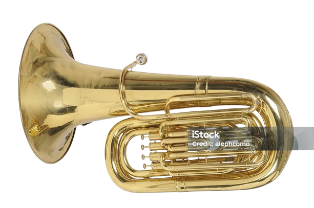

The tuba is the largest and lowest-pitched brass instrument in the brass family. It is known for its deep sound and plays a crucial role in providing a bass foundation in orchestras, bands, and other musical ensembles. Sound Production: As with all brass instruments, the sound is created by buzzing the player's lips into the mouthpiece. This lip vibration causes the air column within the instrument's tubing to vibrate, producing sound. Valves: The tuba uses valves to change pitches. By pressing down on the valves, the player lengthens or shortens the tubing, which changes the resonant frequencies and allows for different notes to be played. Key features and history: Lowest Brass Instrument: The tuba is renowned for its low tonal range. Structure: It consists of a long length of coiled tubing, a flared bell, a mouthpiece, and valves. Invention: The modern tuba was developed in the 19th century. The first valved brass instrument called the tuba was patented in 1835 by Wilhelm Wieprecht and Johann Gottfried Moritz. Variations: There are different types of tubas, including the contrabass tuba, bass tuba, and euphonium, each with variations in size, pitch, and timbre. The sousaphone and helicon are also related instruments, distinguished by their rounded shape. Musical Role: The tuba is used in various musical settings, including concert bands, marching bands, jazz bands, orchestras, and drum and bass lines. Other interesting facts: Lung Capacity: Playing larger tubas can benefit from good lung capacity, which can be improved through deep breathing exercises. Reputation: The tuba is generally considered one of the easier orchestral instruments to master. Famous Players: Notable tuba players include Arnold Jacobs, Roger Bobo, Velvet Brown, and oystein Baadsvik.
